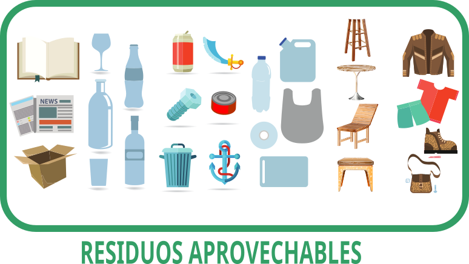

Regla de las 3R
2.1.1 Residuos aprovechables
Es cualquier material, objeto, sustancia o elemento que no tiene valor de uso directo o indirecto para quien lo genere, pero que es susceptible de incorporación a un proceso productivo. Este tipo de residuos se generan en casas, escuelas, oficinas, así como en lugares comerciales.

Obra publicada con Licencia Creative Commons Reconocimiento Compartir igual 4.0